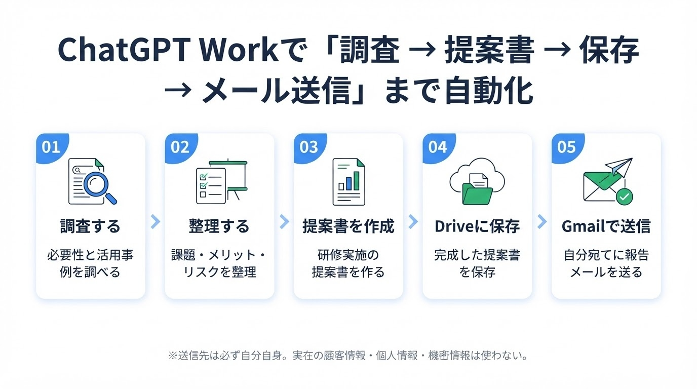
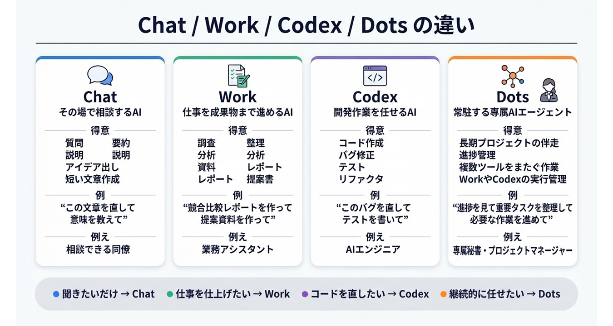
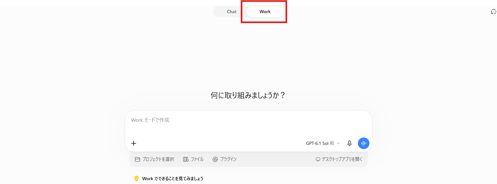

Chat
質問、要約、文章作成、アイデア出しなど、 通常の対話に向いています。
- メール文の作成
- 文章の要約
- 調べ物の相談
- 考えの整理
2026年 秋田県内事業者向け 生成AIハンズオン研修会
Chapter Overview
この章では、ChatGPTの Work を使って、 会社に対して「生成AIを学ぶ必要性」を説明するための情報を調査し、 その内容をもとに 生成AI研修会の実施提案書 を作成します。
さらに、完成した提案書をGoogle Driveに保存し、 Gmailを使って 自分自身のメールアドレス宛てに、完成した旨と資料を送信する ところまでを一連の業務としてAIに実行させます。

Before Hands-on
ChatGPTには、通常の会話だけでなく、目的に応じた複数の使い方があります。 今回のハンズオンでは、その中でも Work を使います。

質問、要約、文章作成、アイデア出しなど、 通常の対話に向いています。
調査、資料作成、ファイル保存、メール作成など、 複数の作業をまとめて進める用途に向いています。
Webサイトやアプリケーションの作成、コード修正、 テストや検証などの開発作業に向いています。
長めの作業、タスク管理、進捗整理など、 継続的な仕事の管理に向いています。
How to Start
まずはChatGPTを開き、Workを選択します。 Workが表示されている場合は、そこから今回の一括実行プロンプトを入力します。

STEP 1
ブラウザでChatGPTを開き、ログインします。 研修用に使うアカウントでログインしているか確認してください。
STEP 2
画面上のメニューから Work を選択します。 表示位置や名称は、プランや提供時期によって変わる場合があります。
STEP 3
このページで作成するプロンプトを貼り付けます。 最初の指示で、調査からメール送信まで一気通貫で依頼します。
Preparation
今回の演習では、ChatGPT Workに 提案書をGoogle Driveに保存 し、 Gmailで自分宛てに完成連絡を送信 させます。
そのため、事前にChatGPT側でGoogle DriveとGmailを使えるように設定しておく必要があります。 単に「Googleアカウントでログインしている」だけでは不十分です。 ChatGPTの設定画面から、Google DriveとGmailの連携を有効にしてください。
ChatGPTの画面左下にあるユーザー名、プロフィール画像、またはアカウントメニューをクリックします。 表示されたメニューから 設定 を開きます。
設定画面の中から、 プラグイン、 コネクター、 接続済みアプリ、 またはそれに近い名称のメニューを探して開きます。
画面表示は利用しているプランや時期によって変わる場合があります。 「Google Drive」「Gmail」「Google Workspace」などの項目を探してください。
一覧から Google Drive を選び、接続を開始します。 Googleアカウントの選択画面が表示されたら、今回の研修で使うアカウントを選択します。
権限確認画面が表示されたら、内容を確認して許可します。 個人アカウントと会社アカウントを間違えないように注意してください。
同じ画面で Gmail を探し、接続します。 Google Driveと同じアカウントで接続しておくと、資料作成から送信までの流れがスムーズです。
今回の研修では、自分自身のメールアドレス宛てにのみ送信します。 実在の上司、同僚、取引先、顧客には送信しないでください。
Workを開き、Google DriveとGmailを使える状態になっているか確認します。 必要に応じて、下の確認用プロンプトを使ってください。
Google DriveとGmailがこのWorkで利用できるか確認してください。
確認したいこと：
1. Google Drive上に新しいGoogleドキュメントを作成できますか？
2. 作成したドキュメントを指定フォルダに保存できますか？
3. Gmailで自分宛てのメールを作成できますか？
4. 作成したGoogleドキュメントを添付、またはDriveリンクとしてメール本文に入れられますか？
注意：
- 実際にメールを送る前には、必ず内容確認をしてください。
- 送信先は自分自身のメールアドレスだけにしてください。
- 連携や権限が不足している場合は、何が不足しているかを分かりやすく教えてください。Goal
企業における生成AI活用の重要性、学習しない場合のリスク、 社員教育の必要性を整理します。
経営者や管理職に説明しやすい形で、 生成AI研修会の実施提案書を作成します。
提案書をGoogle Driveに保存し、 Gmailで完成報告と資料を自分自身に送信します。
Scenario
社内ではChatGPTやGeminiなどの生成AIが話題になっています。 しかし、社員の多くは「聞いたことはあるけれど、業務でどう使えばよいか分からない」 という状態です。
そこであなたは、会社に対して 生成AIを正しく学ぶ必要性 を説明し、 他の社員も教育するための 生成AI研修会の実施 を提案することになりました。
今回は、そのための調査、提案書作成、Google Drive保存、 自分宛ての完成報告メール送信までをChatGPT Workに実行させます。
Before You Start
STEP 1
ChatGPTにログインし、Workを選択します。 Workが見つからない場合は、講師に確認してください。
STEP 2
設定画面からプラグイン、コネクター、接続済みアプリを開き、 Google Driveを接続します。
STEP 3
同じ設定画面からGmailを接続します。 研修では必ず自分宛てに送信します。
STEP 4
送信先として使う自分のメールアドレスを確認しておきます。 誤送信を避けるため、コピーペーストで入力することをおすすめします。
Prompt Builder
下の項目を入力すると、今回の演習用プロンプトが自動で作成されます。 作成されたプロンプトをコピーして、ChatGPT Workに貼り付けてください。
あなたは企業向け生成AI活用研修の企画担当者であり、DX推進を支援するコンサルタントです。
これから、会社に対して生成AI研修会の実施を提案するために、以下の作業を一気通貫で実行してください。
目的：
生成AIの必要性を調査し、会社に対して「社員向け生成AI研修会を実施すべき理由」を説明する提案書を作成し、完成した資料をGoogle Driveに保存したうえで、Gmailを使って自分宛てに完成報告メールを送信してください。
会社名：
株式会社サンプル
自分の役割：
DX推進担当者
提案先：
経営者・管理職
会社の課題：
生成AIに関心はあるが、社員ごとに理解度が異なり、業務活用が進んでいない。
Google Drive保存先：
マイドライブ/研修資料
メール送信先：
自分自身のメールアドレス
実行してほしい作業：
1. 企業が生成AIを学ぶ必要性を調査してください。
2. 生成AIを学ばない場合のリスクを整理してください。
3. 生成AI研修を実施するメリットを、経営層・管理職・一般社員の視点で整理してください。
4. 会社向けの「生成AI研修会 実施提案書」を作成してください。
5. 提案書はGoogleドキュメントとして作成し、Google Driveの指定フォルダに保存してください。
6. 保存した資料のタイトルと保存先を教えてください。
7. Gmailで、自分宛てに完成報告メールを作成してください。
8. メールには、完成した提案書を添付、またはGoogle Driveのリンクとして本文に記載してください。
9. 可能であれば、そのメールを自分宛てに送信してください。
10. 送信前に確認が必要な場合は、確認画面を表示し、私がOKしたら送信してください。
提案書に含める内容：
- タイトル
- 提案の背景
- 生成AIを学ぶ必要性
- 現在の課題
- 研修の目的
- 研修対象者
- 研修内容案
- 期待できる効果
- 実施スケジュール案
- リスクと対策
- まとめ
- 次のアクション
メールに含める内容：
- 件名
- 宛名
- 完成した資料の概要
- 提案書の確認依頼
- Google Driveリンクまたは添付資料
- 確認してほしいポイント
- 締めの文章
条件：
- 専門用語はできるだけ分かりやすく説明してください。
- 経営者や管理職が読んでも分かりやすい文章にしてください。
- 箇条書きや表を使って見やすくしてください。
- 実在の顧客情報、個人情報、社内機密情報は使わないでください。
- メール送信先は自分自身のメールアドレスだけにしてください。
- 送信前に確認が求められる場合は、確認を求めてください。
- 途中で権限や連携が不足している場合は、何が不足しているかを分かりやすく教えてください。Hands-on Workflow
作成した一括実行プロンプトをコピーし、ChatGPT Workに貼り付けます。 最初の指示で、調査からメール送信までまとめて依頼します。
企業が生成AIを学ぶ必要性、活用しない場合のリスク、 研修実施のメリットを整理させます。
調査結果をもとに、経営者や管理職に説明しやすい提案書を作らせます。 提案書の内容に不足があれば、その場で追加指示を出します。
完成した提案書をGoogleドキュメントとしてGoogle Driveに保存させます。 保存先、ファイル名、リンクを確認します。
完成した旨を知らせるメールを作成させ、 提案書を添付またはDriveリンクとして付けたうえで、 自分自身のメールアドレス宛てに送信します。
Checklist
作業が終わったら、できた項目にチェックを入れてください。 チェック状態はこのブラウザに保存されます。
Review
FAQ
研修では、原則として架空の会社名を使ってください。 例として「株式会社サンプル」「秋田ものづくり株式会社」などを使うと安全です。 実在の顧客情報、社内機密情報、個人情報は入力しないでください。
会社アカウントの場合、管理者の設定により外部アプリ連携が禁止されている場合があります。 その場合は、研修用アカウントを使うか、講師に相談してください。 連携できない場合でも、提案書本文とメール本文の作成までは体験できます。
そのまま使うのではなく、必ず人間が確認してください。 特に、会社の実情に合っているか、事実関係に誤りがないか、 提案内容が現実的かを確認する必要があります。
この研修では、誤送信防止のため送信先は必ず自分自身にしてください。 実務で使う場合も、送信前に宛先、本文、添付資料、共有権限を必ず確認してください。